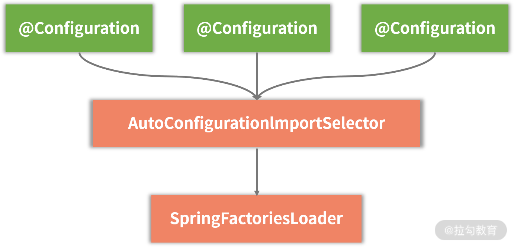
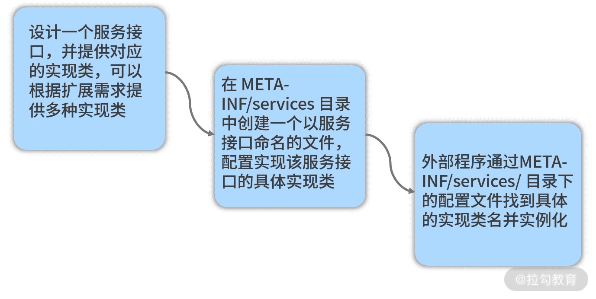

- 00 开篇词 从零开始：为什么要学习 Spring Boot？.md
- 01 家族生态：如何正确理解 Spring 家族的技术体系？.md
- 02 案例驱动：如何剖析一个 Spring Web 应用程序？.md
- 03 多维配置：如何使用 Spring Boot 中的配置体系？.md
- 04 定制配置：如何创建和管理自定义的配置信息？.md
- 05 自动配置：如何正确理解 Spring Boot 自动配置实现原理？.md
- 06 基础规范：如何理解 JDBC 关系型数据库访问规范？.md
- 07 数据访问：如何使用 JdbcTemplate 访问关系型数据库？.md
- 08 数据访问：如何剖析 JdbcTemplate 数据访问实现原理？.md
- 09 数据抽象：Spring Data 如何对数据访问过程进行统一抽象？.md
- 10 ORM 集成：如何使用 Spring Data JPA 访问关系型数据库？.md
- 11 服务发布：如何构建一个 RESTful 风格的 Web 服务？.md
- 12 服务调用：如何使用 RestTemplate 消费 RESTful 服务？.md
- 13 服务调用：如何正确理解 RestTemplate 远程调用实现原理？.md
- 14 消息驱动：如何使用 KafkaTemplate 集成 Kafka？.md
- 15 消息驱动：如何使用 JmsTemplate 集成 ActiveMQ？.md
- 16 消息驱动：如何使用 RabbitTemplate 集成 RabbitMQ？.md
- 17 安全架构：如何理解 Spring 安全体系的整体架构？.md
- 18 用户认证：如何基于 Spring Security 构建用户认证体系？.md
- 19 服务授权：如何基于 Spring Security 确保请求安全访问？.md
- 20 服务监控：如何使用 Actuator 组件实现系统监控？.md
- 21 指标定制：如何实现自定义度量指标和 Actuator 端点？.md
- 22 运行管理：如何使用 Admin Server 管理 Spring 应用程序？.md
- 23 数据测试：如何使用 Spring 测试数据访问层组件？.md
- 24 服务测试：如何使用 Spring 测试 Web 服务层组件？.md
- 结束语 以终为始：Spring Boot 总结和展望.md
05 自动配置：如何正确理解 Spring Boot 自动配置实现原理？
通过前面几个课时内容的介绍，相信你对 Spring Boot 中的配置体系已经有了全面的了解。Spring Boot 中的配置体系是一套强大而复杂的体系，其中最基础、最核心的要数自动配置（AutoConfiguration）机制了。今天我们将围绕这个话题详细展开讨论，看看 Spring Boot 如何实现自动配置。那我们就先从 @SpringBootApplication 注解开始讲起。
@SpringBootApplication 注解
@SpringBootApplication 注解位于 spring-boot-autoconfigure 工程的 org.springframework.boot.autoconfigure 包中，定义如下：
@Target(ElementType.TYPE)
@Retention(RetentionPolicy.RUNTIME)
@Documented
@Inherited
@SpringBootConfiguration
@EnableAutoConfiguration
@ComponentScan(excludeFilters = {
@Filter(type = FilterType.CUSTOM, classes = TypeExcludeFilter.class),
@Filter(type = FilterType.CUSTOM, classes = AutoConfigurationExcludeFilter.class) })
public @interface SpringBootApplication {
@AliasFor(annotation = EnableAutoConfiguration.class)
Class<?>[] exclude() default {};
@AliasFor(annotation = EnableAutoConfiguration.class)
String[] excludeName() default {};
@AliasFor(annotation = ComponentScan.class, attribute = "basePackages")
String[] scanBasePackages() default {};
@AliasFor(annotation = ComponentScan.class, attribute = "basePackageClasses")
Class<?>[] scanBasePackageClasses() default {};
}
相较一般的注解，@SpringBootApplication 注解显得有点复杂。我们可以通过 exclude 和 excludeName 属性来配置不需要实现自动装配的类或类名，也可以通过 scanBasePackages 和 scanBasePackageClasses 属性来配置需要进行扫描的包路径和类路径。
注意到 @SpringBootApplication 注解实际上是一个组合注解，它由三个注解组合而成，分别是 @SpringBootConfiguration、@EnableAutoConfiguration 和 @ComponentScan。
- @ComponentScan 注解
@ComponentScan 注解不是 Spring Boot 引入的新注解，而是属于 Spring 容器管理的内容。@ComponentScan 注解就是扫描基于 @Component 等注解所标注的类所在包下的所有需要注入的类，并把相关 Bean 定义批量加载到容器中。显然，Spring Boot 应用程序中同样需要这个功能。
- @SpringBootConfiguration 注解
@SpringBootConfiguration 注解比较简单，事实上它是一个空注解，只是使用了 Spring 中的 @Configuration 注解。@Configuration 注解比较常见，提供了 JavaConfig 配置类实现。
- @EnableAutoConfiguration 注解
@EnableAutoConfiguration 注解是我们需要重点剖析的对象，下面进行重点展开。该注解的定义如下代码所示：
@Target(ElementType.TYPE)
@Retention(RetentionPolicy.RUNTIME)
@Documented
@Inherited
@AutoConfigurationPackage
@Import(AutoConfigurationImportSelector.class)
public @interface EnableAutoConfiguration {
String ENABLED_OVERRIDE_PROPERTY = "spring.boot.enableautoconfiguration";
Class<?>[] exclude() default {};
String[] excludeName() default {};
}
这里我们关注两个新注解，@AutoConfigurationPackage 和 @Import(AutoConfigurationImportSelector.class)。
@AutoConfigurationPackage 注解
@AutoConfigurationPackage 注解定义如下：
@Target(ElementType.TYPE)
@Retention(RetentionPolicy.RUNTIME)
@Documented
@Inherited
@Import(AutoConfigurationPackages.Registrar.class)
public @interface AutoConfigurationPackage {
}
从命名上讲，在这个注解中我们对该注解所在包下的类进行自动配置，而在实现方式上用到了 Spring 中的 @Import 注解。在使用 Spring Boot 时，@Import 也是一个非常常见的注解，可以用来动态创建 Bean。为了便于理解后续内容，这里有必要对 @Import 注解的运行机制做一些展开，该注解定义如下：
@Target(ElementType.TYPE)
@Retention(RetentionPolicy.RUNTIME)
@Documented
public @interface Import {
Class<?>[] value();
}
在 @Import 注解的属性中可以设置需要引入的类名，例如 @AutoConfigurationPackage 注解上的 @Import(AutoConfigurationPackages.Registrar.class)。根据该类的不同类型，Spring 容器针对 @Import 注解有以下四种处理方式：
- 如果该类实现了 ImportSelector 接口，Spring 容器就会实例化该类，并且调用其 selectImports 方法；
- 如果该类实现了 DeferredImportSelector 接口，则 Spring 容器也会实例化该类并调用其 selectImports方法。DeferredImportSelector 继承了 ImportSelector，区别在于 DeferredImportSelector 实例的 selectImports 方法调用时机晚于 ImportSelector 的实例，要等到 @Configuration 注解中相关的业务全部都处理完了才会调用；
- 如果该类实现了 ImportBeanDefinitionRegistrar 接口，Spring 容器就会实例化该类，并且调用其 registerBeanDefinitions 方法；
- 如果该类没有实现上述三种接口中的任何一个，Spring 容器就会直接实例化该类。
有了对 @Import 注解的基本理解，我们再来看 AutoConfigurationPackages.Registrar 类，定义如下：
static class Registrar implements ImportBeanDefinitionRegistrar, DeterminableImports {
@Override
public void registerBeanDefinitions(AnnotationMetadata metadata,
BeanDefinitionRegistry registry) {
register(registry, new PackageImport(metadata).getPackageName());
}
@Override
public Set<Object> determineImports(AnnotationMetadata metadata) {
return Collections.singleton(new PackageImport(metadata));
}
}
可以看到这个 Registrar 类实现了前面第三种情况中提到的 ImportBeanDefinitionRegistrar 接口并重写了 registerBeanDefinitions 方法，该方法中调用 AutoConfigurationPackages 自身的 register 方法：
public static void register(BeanDefinitionRegistry registry, String... packageNames) {
if (registry.containsBeanDefinition(BEAN)) {
BeanDefinition beanDefinition = registry.getBeanDefinition(BEAN);
ConstructorArgumentValues constructorArguments = beanDefinition
.getConstructorArgumentValues();
constructorArguments.addIndexedArgumentValue(0,
addBasePackages(constructorArguments, packageNames));
}
else {
GenericBeanDefinition beanDefinition = new GenericBeanDefinition();
beanDefinition.setBeanClass(BasePackages.class);
beanDefinition.getConstructorArgumentValues().addIndexedArgumentValue(0,
packageNames);
beanDefinition.setRole(BeanDefinition.ROLE_INFRASTRUCTURE);
registry.registerBeanDefinition(BEAN, beanDefinition);
}
}
这个方法的逻辑是先判断整个 Bean 有没有被注册，如果已经注册则获取 Bean 的定义，通过 Bean 获取构造函数的参数并添加参数值；如果没有，则创建一个新的 Bean 的定义，设置 Bean 的类型为 AutoConfigurationPackages 类型并进行 Bean 的注册。
AutoConfigurationImportSelector
然后我们再来看 @EnableAutoConfiguration 注解中的 @Import(AutoConfigurationImportSelector.class) 部分，首先我们明确 AutoConfigurationImportSelector 类实现了 @Import 注解第二种情况中的 DeferredImportSelector 接口，所以会执行如下所示的 selectImports 方法：
@Override
public String[] selectImports(AnnotationMetadata annotationMetadata) {
if (!isEnabled(annotationMetadata)) {
return NO_IMPORTS;
}
AutoConfigurationMetadata autoConfigurationMetadata = AutoConfigurationMetadataLoader
.loadMetadata(this.beanClassLoader);
AnnotationAttributes attributes = getAttributes(annotationMetadata);
//获取 configurations 集合
List<String> configurations = getCandidateConfigurations(annotationMetadata,
attributes);
configurations = removeDuplicates(configurations);
Set<String> exclusions = getExclusions(annotationMetadata, attributes);
checkExcludedClasses(configurations, exclusions);
configurations.removeAll(exclusions);
configurations = filter(configurations, autoConfigurationMetadata);
fireAutoConfigurationImportEvents(configurations, exclusions);
return StringUtils.toStringArray(configurations);
}
这段代码的核心是通过 getCandidateConfigurations 方法获取 configurations 集合并进行过滤。getCandidateConfigurations 方法如下所示：
protected List<String> getCandidateConfigurations(AnnotationMetadata metadata,
AnnotationAttributes attributes) {
List<String> configurations = SpringFactoriesLoader.loadFactoryNames(
getSpringFactoriesLoaderFactoryClass(), getBeanClassLoader());
Assert.notEmpty(configurations,
"No auto configuration classes found in META-INF/spring.factories. If you "
+ "are using a custom packaging, make sure that file is correct.");
return configurations;
}
这段代码中可以先关注 Assert 校验，该校验是一个非空校验，会提示 “在 META-INF/spring.factories 中没有找到自动配置类” 这个异常信息。看到这里，不得不提到 JDK 中的 SPI 机制，因为无论从 SpringFactoriesLoader 这个类的命名上，还是 META-INF/spring.factories 这个文件目录，两者之间都存在很大的相通性。关于 JDK 中的 SPI 机制，我们在 05 讲的后续内容中马上就会介绍到。
从类名上看，AutoConfigurationImportSelector 类是一种选择器，负责从各种配置项中找到需要导入的具体配置类。该类的结构如下图所示：

AutoConfigurationImportSelector 类层结构图
显然，AutoConfigurationImportSelector 所依赖的最关键组件就是 SpringFactoriesLoader，下面我们对其进行具体展开。
SPI 机制和 SpringFactoriesLoader
要想理解 SpringFactoriesLoader 类，我们首先需要了解 JDK 中 SPI（Service Provider Interface，服务提供者接口）机制。
JDK 中的 SPI 机制
JDK 提供了用于服务查找的一个工具类 java.util.ServiceLoader 来实现 SPI 机制。当服务提供者提供了服务接口的一种实现之后，我们可以在 jar 包的 META-INF/services/ 目录下创建一个以服务接口命名的文件，该文件里配置着一组 Key-Value，用于指定服务接口与实现该服务接口具体实现类的映射关系。而当外部程序装配这个 jar 包时，就能通过该 jar 包 META-INF/services/ 目录中的配置文件找到具体的实现类名，并装载实例化，从而完成模块的注入。SPI 提供了一种约定，基于该约定就能很好地找到服务接口的实现类，而不需要在代码里硬编码指定。JDK 中 SPI 机制开发流程如下图所示：

JDK 中 SPI 机制开发流程图
SpringFactoriesLoader
SpringFactoriesLoader 类似这种 SPI 机制，只不过以服务接口命名的文件是放在 META-INF/spring.factories 文件夹下，对应的 Key 为 EnableAutoConfiguration。SpringFactoriesLoader 会查找所有 META-INF/spring.factories 文件夹中的配置文件，并把 Key 为 EnableAutoConfiguration 所对应的配置项通过反射实例化为配置类并加载到容器中。这一点我们可以在 SpringFactoriesLoader 的 loadSpringFactories 方法中进行印证：
private static Map<String, List<String>> loadSpringFactories(@Nullable ClassLoader classLoader) {
MultiValueMap<String, String> result = cache.get(classLoader);
if (result != null) {
return result;
}
try {
Enumeration<URL> urls = (classLoader != null ?
classLoader.getResources(FACTORIES_RESOURCE_LOCATION) :
ClassLoader.getSystemResources(FACTORIES_RESOURCE_LOCATION));
result = new LinkedMultiValueMap<>();
while (urls.hasMoreElements()) {
URL url = urls.nextElement();
UrlResource resource = new UrlResource(url);
Properties properties = PropertiesLoaderUtils.loadProperties(resource);
for (Map.Entry<?, ?> entry : properties.entrySet()) {
String factoryClassName = ((String) entry.getKey()).trim();
for (String factoryName : StringUtils.commaDelimitedListToStringArray((String) entry.getValue())) {
result.add(factoryClassName, factoryName.trim());
}
}
}
cache.put(classLoader, result);
return result;
}
catch (IOException ex) {
throw new IllegalArgumentException("Unable to load factories from location [" +
FACTORIES_RESOURCE_LOCATION + "]", ex);
}
}
以下就是 spring-boot-autoconfigure 工程中所使用的 spring.factories 配置文件片段，可以看到 EnableAutoConfiguration 项中包含了各式各样的配置项，这些配置项在 Spring Boot 启动过程中都能够通过 SpringFactoriesLoader 加载到运行时环境，从而实现自动化配置：
# Auto Configure
org.springframework.boot.autoconfigure.EnableAutoConfiguration=\
org.springframework.boot.autoconfigure.admin.SpringApplicationAdminJmxAutoConfiguration,\
org.springframework.boot.autoconfigure.aop.AopAutoConfiguration,\
org.springframework.boot.autoconfigure.amqp.RabbitAutoConfiguration,\
org.springframework.boot.autoconfigure.MessageSourceAutoConfiguration,\
org.springframework.boot.autoconfigure.PropertyPlaceholderAutoConfiguration,\
org.springframework.boot.autoconfigure.batch.BatchAutoConfiguration,\
org.springframework.boot.autoconfigure.cache.CacheAutoConfiguration,\
org.springframework.boot.autoconfigure.cassandra.CassandraAutoConfiguration,\
org.springframework.boot.autoconfigure.cloud.CloudAutoConfiguration,\
org.springframework.boot.autoconfigure.context.ConfigurationPropertiesAutoConfiguration,\
…
以上就是 Spring Boot 中基于 @SpringBootApplication 注解实现自动配置的基本过程和原理。当然，@SpringBootApplication 注解也可以基于外部配置文件加载配置信息。基于约定优于配置思想，Spring Boot 在加载外部配置文件的过程中大量使用了默认配置。
@ConditionalOn 系列条件注解
Spring Boot 默认提供了 100 多个 AutoConfiguration 类，显然我们不可能会全部引入。所以在自动装配时，系统会去类路径下寻找是否有对应的配置类。如果有对应的配置类，则按条件进行判断，决定是否需要装配。这里就引出了在阅读 Spring Boot 代码时经常会碰到的另一批注解，即 @ConditionalOn 系列条件注解。
@ConditionalOn 系列条件注解的示例
我们先通过一个简单的示例来了解 @ConditionalOn 系列条件注解的使用方式，例如以下代码就是这类注解的一种典型应用，该代码位于 Spring Cloud Config 的客户端代码工程 spring-cloud-config-client 中：
@Bean @ConditionalOnMissingBean(ConfigServicePropertySourceLocator.class)
@ConditionalOnProperty(value = "spring.cloud.config.enabled", matchIfMissing = true)
public ConfigServicePropertySourceLocator configServicePropertySource(ConfigClientProperties properties) {
ConfigServicePropertySourceLocator locator = new ConfigServicePropertySourceLocator(
properties);
return locator;
}
可以看到，这里运用了两个 @ConditionalOn 注解，一个是 @ConditionalOnMissingBean，一个是 @ConditionalOnProperty。再比如在 Spring Cloud Config 的服务器端代码工程 spring-cloud-config-server 中，存在如下 ConfigServerAutoConfiguration 自动配置类：
@Configuration
@ConditionalOnBean(ConfigServerConfiguration.Marker.class)
@EnableConfigurationProperties(ConfigServerProperties.class)
@Import({ EnvironmentRepositoryConfiguration.class, CompositeConfiguration.class, ResourceRepositoryConfiguration.class,
ConfigServerEncryptionConfiguration.class, ConfigServerMvcConfiguration.class })
public class ConfigServerAutoConfiguration {
}
这里我们运用了 @ConditionalOnBean 注解。实际上，Spring Boot 中提供了一系列的条件注解，常见的包括：
- @ConditionalOnProperty：只有当所提供的属性属于 true 时才会实例化 Bean
- @ConditionalOnBean：只有在当前上下文中存在某个对象时才会实例化 Bean
- @ConditionalOnClass：只有当某个 Class 位于类路径上时才会实例化 Bean
- @ConditionalOnExpression：只有当表达式为 true 的时候才会实例化 Bean
- @ConditionalOnMissingBean：只有在当前上下文中不存在某个对象时才会实例化 Bean
- @ConditionalOnMissingClass：只有当某个 Class 在类路径上不存在的时候才会实例化 Bean
- @ConditionalOnNotWebApplication：只有当不是 Web 应用时才会实例化 Bean
当然 Spring Boot 还提供了一些不大常用的 @ConditionalOnXXX 注解，这些注解都定义在 org.springframework.boot.autoconfigure.condition 包中。
显然上述 ConfigServicePropertySourceLocator 类中只有在 "spring.cloud.config.enabled" 属性为 true（通过 matchIfMissing 配置项表示默认即为 true）以及类路径上不存在 ConfigServicePropertySourceLocator 时才会进行实例化。而 ConfigServerAutoConfiguration 只有在类路径上存在 ConfigServerConfiguration.Marker 类时才会进行实例化，这是一种常用的自动配置控制技巧。
@ConditionalOn 系列条件注解的实现原理
@ConditionalOn 系列条件注解非常多，我们无意对所有这些组件进行展开。事实上这些注解的实现原理也大致相同，我们只需要深入了解其中一个就能做到触类旁通。这里我们挑选 @ConditionalOnClass 注解进行展开，该注解定义如下：
@Target({ ElementType.TYPE, ElementType.METHOD })
@Retention(RetentionPolicy.RUNTIME)
@Documented
@Conditional(OnClassCondition.class)
public @interface ConditionalOnClass {
Class<?>[] value() default {};
String[] name() default {};
}
可以看到， @ConditionalOnClass 注解本身带有两个属性，一个 Class 类型的 value，一个 String 类型的 name，所以我们可以采用这两种方式中的任意一种来使用该注解。同时 ConditionalOnClass 注解本身还带了一个 @Conditional(OnClassCondition.class) 注解。所以， ConditionalOnClass 注解的判断条件其实就包含在 OnClassCondition 这个类中。
OnClassCondition 是 SpringBootCondition 的子类，而 SpringBootCondition 又实现了Condition 接口。Condition 接口只有一个 matches 方法，如下所示：
public interface Condition {
boolean matches(ConditionContext context, AnnotatedTypeMetadata metadata);
}
SpringBootCondition 中的 matches 方法实现如下：
@Override
public final boolean matches(ConditionContext context,
AnnotatedTypeMetadata metadata) {
String classOrMethodName = getClassOrMethodName(metadata);
try {
ConditionOutcome outcome = getMatchOutcome(context, metadata);
logOutcome(classOrMethodName, outcome);
recordEvaluation(context, classOrMethodName, outcome);
return outcome.isMatch();
}
//省略其他方法
}
这里的 getClassOrMethodName 方法获取被添加了@ConditionalOnClass 注解的类或者方法的名称，而 getMatchOutcome 方法用于获取匹配的输出。我们看到 getMatchOutcome 方法实际上是一个抽象方法，需要交由 SpringBootCondition 的各个子类完成实现，这里的子类就是 OnClassCondition 类。在理解 OnClassCondition 时，我们需要明白在 Spring Boot 中，@ConditionalOnClass 或者 @ConditionalOnMissingClass 注解对应的条件类都是 OnClassCondition，所以在 OnClassCondition 的 getMatchOutcome 中会同时处理两种情况。这里我们挑选处理 @ConditionalOnClass 注解的代码，核心逻辑如下所示：
ClassLoader classLoader = context.getClassLoader();
ConditionMessage matchMessage = ConditionMessage.empty();
List<String> onClasses = getCandidates(metadata, ConditionalOnClass.class);
if (onClasses != null) {
List<String> missing = getMatches(onClasses, MatchType.MISSING, classLoader);
if (!missing.isEmpty()) {
return ConditionOutcome
.noMatch(ConditionMessage.forCondition(ConditionalOnClass.class)
.didNotFind("required class", "required classes")
.items(Style.QUOTE, missing));
}
matchMessage = matchMessage.andCondition(ConditionalOnClass.class)
.found("required class", "required classes").items(Style.QUOTE, getMatches(onClasses, MatchType.PRESENT, classLoader));
}
这里有两个方法值得注意，一个是 getCandidates 方法，一个是 getMatches 方法。首先通过 getCandidates 方法获取了 ConditionalOnClass 的 name 属性和 value 属性。然后通过 getMatches 方法将这些属性值进行比对，得到这些属性所指定的但在类加载器中不存在的类。如果发现类加载器中应该存在但事实上又不存在的类，则返回一个匹配失败的 Condition；反之，如果类加载器中存在对应类的话，则把匹配信息进行记录并返回一个 ConditionOutcome。
从源码解析到日常开发
在今天的内容中，我们接触到了 Spring Boot 开发过程中非常核心的话题，即自动配置。自动配置是理解 Spring Boot 应用程序构建和运行的关键要素。当我们尝试去理解一个基于 Spring Boot 开发的工具或框架时，今天的内容能帮助你快速切入该工具或框架的实现原理。同时，在日常开发过程中，诸如 SPI 机制和 @ConditionalOn 系列条件注解也都可以直接应用到我们自身的系统设计和开发中，从而提供高扩展性的架构实现方案。
小结与预告
可以说，自动配置是 Spring Boot 最核心和最基本的功能，而 @SpringBootApplication 注解又是 Spring Boot 应用程序的入口。本课时从 @SpringBootApplication 注解入手，详细分析了自动配置机制的实现过程。涉及的知识点比较多，包含 JDK 中的 SPI 机制，以及 @ConditionalOn 系列条件注解，需要你进行分析和掌握。